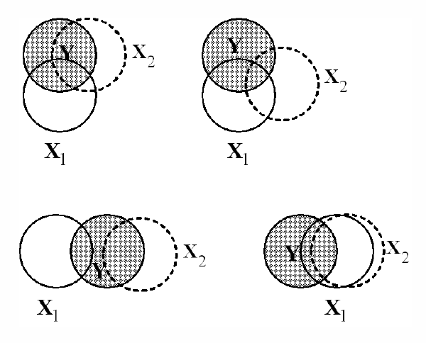
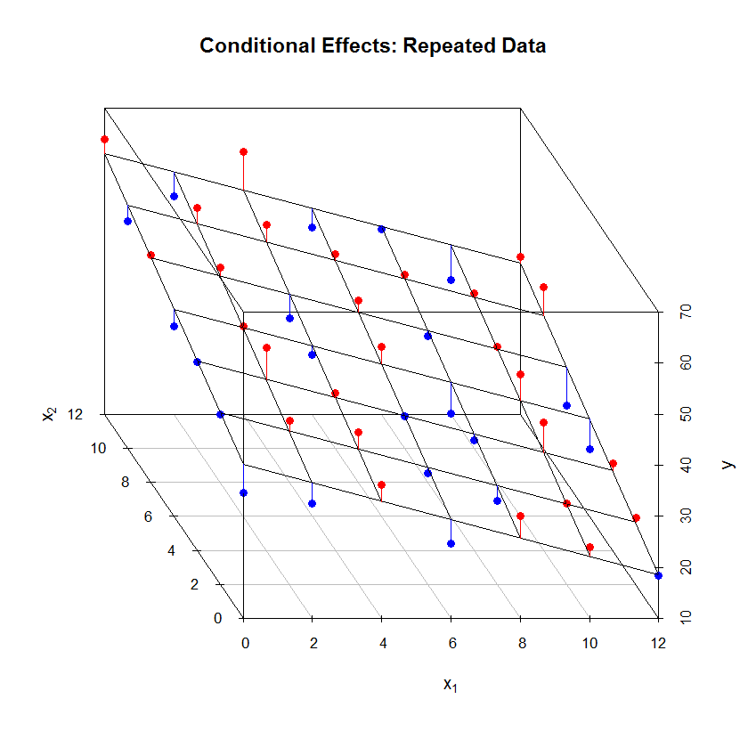
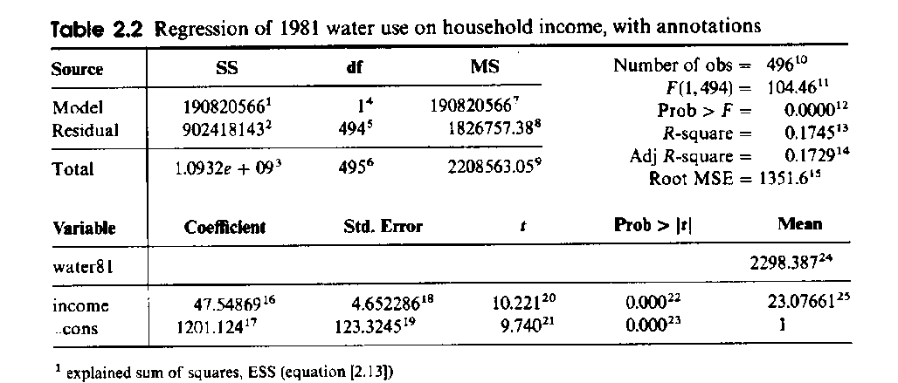
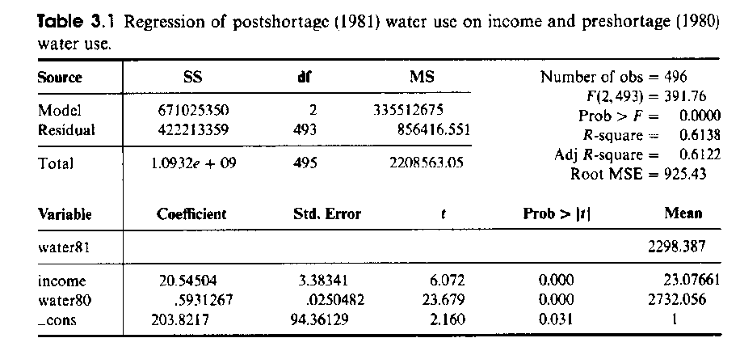
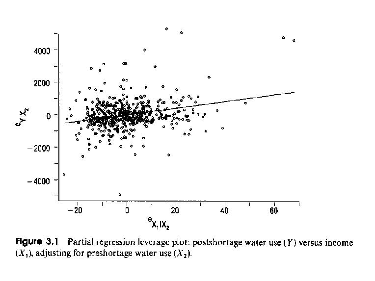
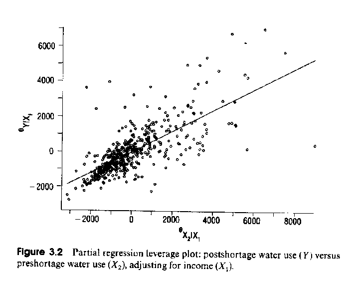
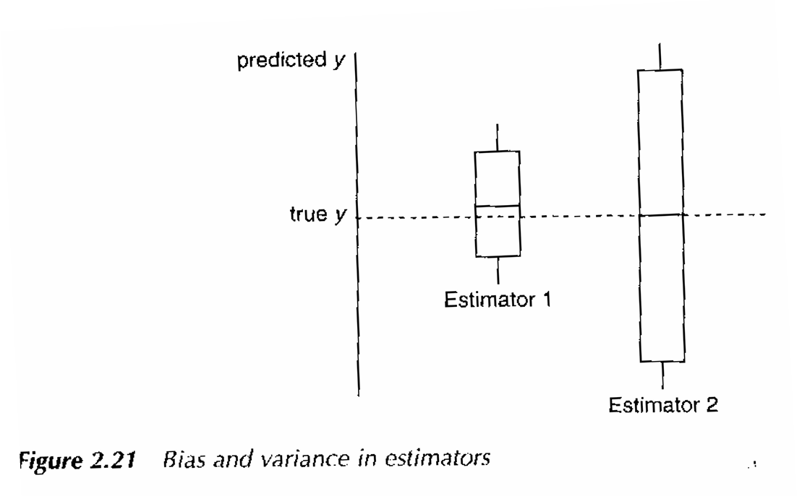
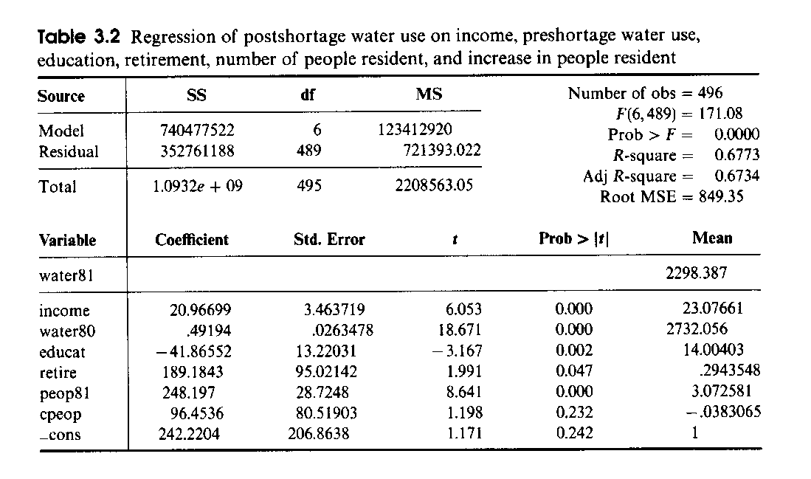
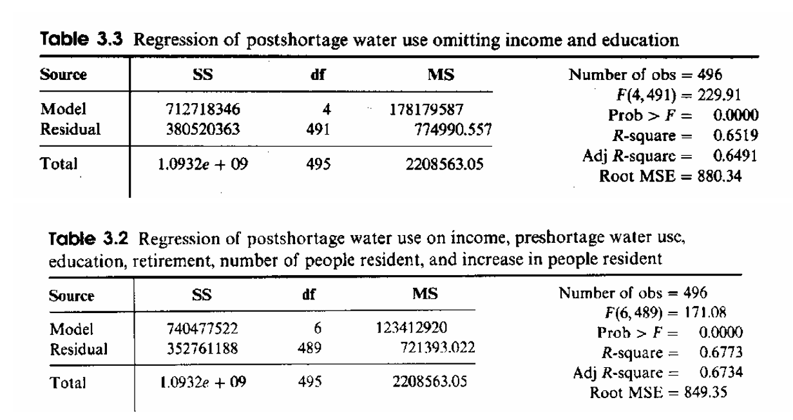

Hamilton Chapter 3A: Multiple Regression Analysis
1 Interpretation of the Multiple Regression Model
A dependent variable in the population may not only be influenced by one independent variable but by a whole set of independent variables.
These independent variables may not only be correlated with the dependent variable but also among each other.
\(\Rightarrow\) This leads to the question how we can measure the individual effects (or contributions) of single variables by controlling for the variables redundancies?
Ballentine Venn Diagram
Shared explained variance and correlation among independent variables
Additional variables reduce the stochastic error in the dependent variable (equivalent to RSS).
Anecdote: The Ballentine diagram was invented by a group of statisticians at a conference pub drinking Ballantine Beer: https://en.wikipedia.org/wiki/P._Ballantine_and_Sons_Brewing_Company

2 Model with Two Independent Variables
Discussion of plot with two independent variables:
In multiple linear regression the independent variables with the dependent variable span up a linear “hyper”-plane.
The slope of the surface along the axes \(X_1\) and \(X_2\) is given by the parameters \(b_1\) and \(b_2\).
That is, the slope \(b_1\) measures the variation of \(y\) with respect \(x_1\) at any fixed level of \(x_2\) (i.e., \(x_{i2} = c\) held constant at any particular value \(c\)).
Analogue interpretation for slope \(b_2\).
The regression parameters are also called partial regression coefficients because of the underlying assumption that if the remaining independent variables are held constant at any given levels, i.e., the relationship (slope) does not change from one level of the other independent variables to another level. That is, in multiple linear regression effects of the other independent variables is controlled for.
The intercept is given again by \(b_0\) (here \(x_{i1} = 0\) and \(x_{i2} = 0\))
That is, \(E(Y_i | X_{i1} = 0, X_{i2} = 0) = \beta_0\) (see Ham p 66).
In the given example, are \(X_1\) and \(X_2\) correlated?

3 Partial Regression Coefficients
Experimental Studies A: A researcher can control for the correlations among the independent variables by selecting the level of each independent variable in the study.
\(\Rightarrow\) The desired zero correlation level is achieved by assigning the observations to different treatment level combinations. \(\Rightarrow\) scatterplot of independent variable lacks a pattern.
Experimental Studies B: By randomly assigning the observations (i.e., random sampling) to different treatment groups. Due to this random assignment any confounding variable would evenly distribute among the different treatment groups and therefore become independent of the group assignment.
Observational Studies: We can only control for the spurious/confounding effects of other variables with a statistical approach. Fortunately, OLS does this for us!
In multiple regression analysis the individual parameters express the relationship between the dependent and one independent variable while statistically holding the effects all other variables constant.
The set of estimated parameters \(\{b_0, b_1, \ldots, b_{K-1}\}\) of the included variables may change as new variables are added to the model because of the correlations of a new variable with the already included independent variables.
Only if the new independent variables is uncorrelated with the already included variables, no change will occur.
See example in Hamilton: WaterUse81 = f(Income) versus WaterUse81 = f(Income, WaterUse80).


Questions:
[1] Is the estimated coefficient in the bivariate model biased or does it reflect the value of its underlying population? Answer: Yes, because after controlling for previous water consumption its coefficient is adjusted.
[2] What does the previous water consumption measure? Answer: Base-line water consumption of a household over time. This captures variables influencing the water consumption which are not explicitly included in the current model.
[3] Are the regression assumptions still satisfied by using a temporarily lagged dependent variable on the right-hand side of the equation? Answer: As long as error are not conterminously correlated everything is okay
4 Partial Effects and Leverage Plot
Interpretation of regression residuals:
The regression residuals \(e_i = y_i - \hat{y}_i\) are free from any linear effect (i.e., correlation) with the model’s set of independent variables.
They measure the remaining (i.e., unexplained) variation of the dependent variable \(y\) after accounting for the set of included independent variables.
Therefore, the residuals are uncorrelated, or more generally “orthogonal”, with the independent variables, i.e., \(\sum_{i=1}^n x_{ij} \cdot e_i = 0\).
Since the constant unity vector \(\mathbf{1} = (1,1,\ldots,1)^T\), which models the intercept, is part of the independent variables, they also sum to zero, that is, \(\sum_{i=1}^n 1 \cdot e_i = 0\).
\(\Rightarrow\) This provides a justification for keeping even an insignificant intercept in the model because otherwise the residuals may no longer sum to zero.
A proof of these properties is easily accomplished with matrix algebra.
Work through the water usage example HAM pp 70-71:
- Removing effect of previous water consumption \(X_2\) (water80)
\[\hat{Y}_i = 203.8 + 20.5X_{i1} + 0.59X_{i2}\] \[\rule{2cm}{0.4pt}\] \[Y_i = 537.9 + 0.64X_{i2} + e_{i,Y|X_2}\] \[X_{i1} = 16.26 + 0.0025X_{i2} + e_{i,X_1|X_2}\] \[\hat{e}_{i,Y|X_2} = 0 + 20.5e_{i,X_1|X_2}\]

Questions:
[a] Why is the \(b_0\) coefficient zero? Answer: the sum of the residuals is zero, thus the means of \(e_{X_1|X_2}\) and \(e_{Y|X_2}\) lies at the origin (0,0) of the coordinate system.
[b] What happens to the residuals \(e_{X_1|X_2}\) if \(X_1\) and \(X_2\) are perfectly correlated? What is the impact on the partial regression equation? Answer: The regression in the residuals can no longer be calculated because the regressor is constant zero.
[c] What happens if \(X_1\) and \(X_2\) are uncorrelated? Answer: Then \(e_{X_1|X_2}\) is equal to \(X_1\) (up to a shift in the mean) and the bivariate and multiple regression coefficients of \(X_1\) are identically.
- Removing the effect of \(X_1\) (Income)
\[Y_i = 1201.1 + 47.5X_{i1} + e_{i,Y|X_1}\] \[X_{i2} = 1681.4 + 45.5X_{i1} + e_{i,X_2|X_1}\] \[\hat{e}_{i,Y|X_1} = 0 + 0.59e_{i,X_2|X_1}\]
Compared to the sign of the regression coefficient in the bivariate model, it is possible for a multiple model that the sign of a regression parameter changes, that is, the direction of a partial parameter changes and thus the interpretation of its associated independent variable.
Partial correlation: It is the correlation between Y and \(X_1\) after the linear effects of the remaining variables \(\{X_2, \ldots, X_{K-1}\}\) has been removed \(Corr(e_{Y|X_2,\ldots,X_{K-1}}, e_{X_1|X_2,\ldots,X_{K-1}})\)

5 Selection Criteria for the Independent Variables
A theory should guide us in our decisions, which variables have a meaningful influence on the endogenous variable (they are significant) and in which direction (sign of the partial regression coefficient) this influence pointing.
However, in many cases theory is not sufficiently well developed, and we may also search for a set of relevant variables (\(\Rightarrow\) exploratory regression analysis).
Effects of adding variables to the model:
\(R^2\) always increases (or stays at least the same for absolutely irrelevant variables) but not necessarily \(R_{adj}^2\) (Why?)
Important variables => their estimated coefficient is significantly different from zero
The significance of spurious variables may shrink.
General goal: finding a balance between simplicity (i.e., interpretability) and complexity (i.e., model fit) of the regression model (statistical concept of parsimony).
Goal: We want to describe the variability in the dependent variable as concise as possible.
\(R_{adj}^2\) adopts this concept by penalizing adding additional independent variables.
Akaike’s information criterion, \(AIC = -\log(likelihood) + 2 \cdot (K - 1)\), also makes use of this concept. Smaller \(AIC\) values are preferred:
\(-\log(likelihood) \downarrow\) when \(K \uparrow\), that is, each additional estimated parameter increases \(AIC\) by 2, therefore the \(-\log(likelihood)\) needs to shrink at least by the factor 2.
Note: If we include \(n - 1\) independent randomly generated variables we would obtain a perfectly fitting model, i.e., \(R^2 = 1\), even though none of these random variables is relevant in explaining the variation in the dependent variable.
However, such a model is as complex (\(n\) estimated parameters based on \(n\) observations) as our original data and therefore violates the paradigm of parsimony. It basically models the random error term.
Consequences of a mis-specified regression model:
Including irrelevant variables: Coefficient statistical close to zero. \(R^2\) increases only marginally. Standard errors of all estimated parameters will increase.
Q: What are the consequences of an increased standard error? Answer: an independent variable’s significance diminishes assuming an unchanged parameter value.
Additional irrelevant variables increase unnecessarily the complexity of the model.
Omitted relevant variables: If the omitted variables are correlated with other variables in the model, then the parameter estimates of the included variables becomes biased, i.e., \(E(b_k) \neq \beta_k\). Unrealistic simple model.
However, standard errors of parameters in the misspecified model are usually smaller.
The model does not explain the variation in the dependent variable as well as it could.
General aim: Minimize the mean square error of the included parameter estimates.
\[MSE = E\left[b_k - \beta_k\right]^2 = Var[b_k] + bias^2\]
with
\[Var[b_k] = E\left[b_k - E(b_k)\right]^2\] \[bias^2 = \left[E(b_k) - \beta_k\right]^2\]
Tradeoff between standard error and bias. We may be willing to accept a small bias if the variance of the estimated parameter is decreased substantially.

6 Discussion Seven Variables Example (HAM p 74)
State a hypothesis about each included variable.
Compare against model with only INCOME and WATER80. Which parameters are stable?
Status of the RETIRE variable. => binary 0/1 indicator variable with 0=not retired and 1=retired
Order of partial regression coefficients in terms of t-values
What does the change in the number of people measure?
Interpretation each coefficient’s sign: water consumption increases if …, and it decreases if…

7 Standardized Regression Coefficients (Beta Coefficients)
- The interpretation is now in terms of variations of standard deviations and not in terms of original variable measurement units:
\[beta_i = \frac{s_{x_i} \cdot b_i}{s_y}\]
That is, if \(x_i\) changes by one standard deviation, how many standard deviations does \(y\) change?
The intercept is always zero because regression plane goes now through the origin, because the mean of standardized variables is always zero.
The larger the absolute value (maximum value is less than \(|1|\)) the more influence the independent variable has on the variation of the dependent variable.
This allows to compare the importance of individual variable in one fixed model:
| Variable | Beta-weight |
|---|---|
| Income | 0.18 |
| water80 | 0.58 |
| Educat | -0.09 |
| Retire | 0.06 |
| peop81 | 0.28 |
| Cpeop | 0.03 |
Beta coefficients are not comparable among different samples or studies because the variance of the dependent and independent variables may vary slightly from sample to sample.
In contrast to bivariate regression analysis, the beta coefficients are no identical to the correlation coefficient between the dependent and the independent variables.
8 Global F-Test
Null hypothesis testing for all parameters (except intercept) equal to zero.
Global (or omnibus) F-test:
\[H_0: \beta_1 = \beta_2 = \ldots = \beta_{K-1} = 0 \text{ against}\] \[H_1: \beta_j \neq 0 \text{ for at least on } j \in \{1,\ldots,K-1\}\]
- The test statistic is:
\[F_{df_1,df_2} = \frac{ESS/(K-1)}{RSS/(n-K)}\]
where \(df_1 = K - 1\) and \(df_2 = n - K\)
9 Partial F-Test
Nested models: The ordinate model has more independent variables (say \(K\)) than the subordinate model, which has \(H\) fewer independent variables with \(0 < H < K\).
The subordinate model consists of a sub-set of independent variables from the ordinate model.
This nesting allows a comparison across models.
Warning: If models are not nested a direct comparison becomes impossible.
To test whether these \(H\) independent variables add significantly to the model the partial F-test can be used with
\[F_{n-K}^H = \frac{(RSS_{K-H} - RSS_K)/H}{RSS_K/(n-K)}\]
with \(RSS_{K-H}\) coming from the restricted model with \(H\) less independent variables and \(RSS_K\) is the full model.
Note that \(RSS_K \leq RSS_{K-H}\), because the residual sum of squares decreases (or stays the same) as additional variables are included into the model.
- Compare model without Income and Education against full model by using the tabulated data. I.e: \(H_0: \beta_1 = \beta_3 = 0\). See HAM p 81.

\[F_{489}^2 = \frac{(RSS\{5\} - RSS\{7\})/2}{RSS\{7\}/(496-7)}\] \[= \frac{(380,520,363 - 352,761,188)/2}{352,761,188/489}\] \[= 19.24\]
The global F-test as special case of the partial F-test (HAM eq 3.29): I.e. \(H_0: \beta_1 = \ldots = \beta_{K-1} = 0\).
Here \(H = K - 1\) and the constant vector remains the only variable in the restricted regression equation.
\[F_{n-K}^{K-1} = \frac{(RSS_1 - RSS_K)/(K-1)}{RSS_K/(n-K)}\] \[= \frac{(TSS_Y - RSS_K)/(K-1)}{RSS_K/(n-K)}\] \[= \frac{ESS/(K-1)}{RSS_K/(n-K)}\]
The t-test is a special case of the partial F-test with the null hypothesis \(H_0: \beta_k = 0\) and the number of excluded parameters being \(H = 1\). Here \(t^2 = F\)
Since the F-statistic is always positive, directional hypotheses cannot be tested.
10 Excursion: R’s ANOVA-Functions
The anova function can perform partial F-tests for nested models. \(\Rightarrow\) anova(lm.mod1,lm.mod2).
Applied on a single model, e.g., lm(y~x1+x2+x3), it performs a sequence of nested tests and provides the residual sum of squares of the full model. The sequence of test follows the order of the independent variables in the regression formula are:
lm(y~1) against lm(y~x1),
lm(y~x1) against lm(y~x1+x2), and
lm(y~x1+x2) against lm(y~x1+x2+x3)
In general, only the last comparison is meaningful unless one has a clear expectation of the order of the independent variables.
This is known as SAS type I ANOVA.
In contrast, the function Anova in the car library tests an alternative set of hypotheses. Its sequence of tests is
lm(y~x2+x3) against lm(y~x1+x2+x3),
lm(y~x1+x3) against lm(y~x1+x2+x3), and
lm(y~x1+x2) against lm(y~x1+x2+x3)
This is known as SAS type II ANOVA. It is equivalent to the t-test for individual variables.
For more details see Fox & Weisberg (2019), pages 260-264.